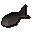
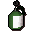

Catherby
Location at 2821, 3432 · Kingdom of Kandarin
Open on the world map → Open in knowledge graph → Below: Catherby (underground)
NPCs
| NPC | Level | Spawns | Notable drops |
|---|---|---|---|
| 25 | 1 | ||
| 2 | 2 | Coins, Herb drop table, Bolt, Fishing bait | |
| 2 | 1 | Coins, Herb drop table, Bolt, Fishing bait | |
| 2 | 1 | Coins, Herb drop table, Bolt, Fishing bait | |
| shop | 1 | ||
| 2 | |||
| 2 | |||
| 1 | |||
| shop | 1 | ||
| 2 | |||
| 2 | |||
| 3 | |||
| shop | 1 | ||
| shop | 1 |
Ground items

Burnt fish x1
Insect repellent x1